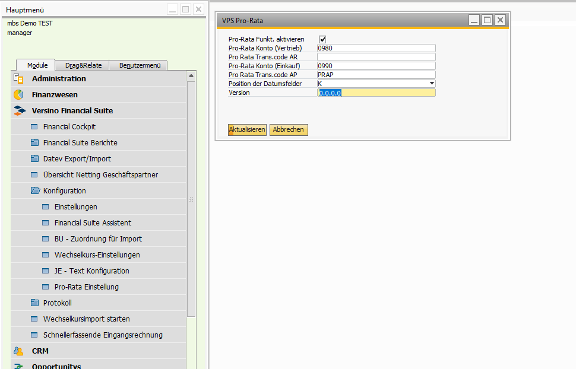
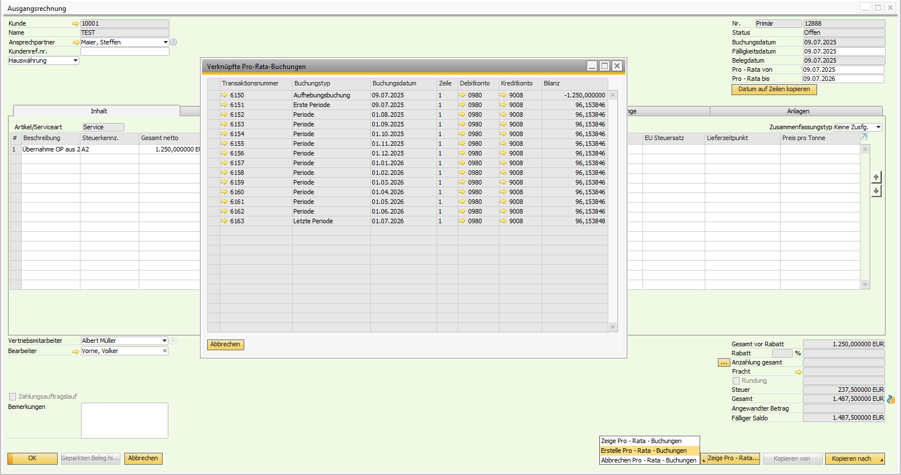

Period Accrual/Deferral (Pro-Rata)
Overview
The Versino Pro-Rata Module automates the creation of pro-rata accrual/deferral postings in SAP Business One. When you create an invoice with a service period spanning multiple months (e.g., an annual license), the module distributes the amounts on a daily basis and automatically across the corresponding periods. This ensures a correct, period-based profit and loss statement.
Access & Configuration: The settings are made under Versino Financial Suite > Configuration > Pro-Rata Settings. Here you must activate the module, define the necessary accrual/deferral accounts, and can specify the position of the date fields (in the header of the invoice or in a separate tab).
Supported Documents: A/P and A/R invoices and their corresponding credit memos.

Main Features
Automatic Accrual/Deferral Postings & Calculation
The system automatically creates journal entries to distribute invoice amounts pro-rata on a daily basis across the corresponding months. It correctly handles different month lengths and partial months. The posting logic reverses the original revenue or expense posting, books the total amount to an accrual/deferral account, and then releases it monthly on a pro-rata basis.
Flexible Accrual/Deferral (Header & Row Level)
The module adds fields for the accrual/deferral period (From/To date) to the invoice forms. You can either set the period for the entire invoice in the header area or define it individually for each invoice row. A convenient button ("Copy date to rows") allows you to quickly transfer the data from the header to all rows.
Reversal and Correction Functions
Accruals/deferrals can be easily corrected. If you create a credit memo for a deferred invoice, the associated accrual/deferral postings are automatically reversed proportionally. Alternatively, you can manually reverse all accruals/deferrals via the action menu in the document, change the data, and recreate the postings.
Advanced Features & Validation
The module is seamlessly integrated into SAP Business One and supports advanced scenarios:
- Cost Accounting: All dimensions (cost centers, projects, all 5 profit-center dimensions) are carried over from the original invoice into the accrual/deferral postings.
- Foreign Currencies: Full support including automatic exchange-rate handling.
- Branches: In multi-branch environments, branch assignments are taken into account automatically.
- Validation: Before each posting creation, the system checks open posting periods, user permissions, account configuration and date entries.
Practical Examples
Example 1: Daily Distribution Across Four Months
You create an A/P invoice for 1,200.00 EUR covering a maintenance contract from 15 Oct 2024 to 14 Jan 2025 (93 days total). The system distributes the amount day-precise:
- October: 17 of 31 days → 219.35 EUR
- November: 30 of 30 days → 387.10 EUR
- December: 31 of 31 days → 400.00 EUR
- January: 14 of 31 days → 193.55 EUR
Rounding differences are balanced automatically by the system.
Example 2: Annual Software License
You post an A/R invoice for 1,200.00 EUR for an annual software license from 01 Mar 2024 to 28 Feb 2025. The system automatically creates 12 monthly accrual postings of 100.00 EUR each for every month from March 2024 to February 2025.
.png)
Integration with Other VPS Modules
Pro-Rata unleashes its full potential when used together with the other Financial Suite modules:
VPS Posting Text Configurator (JE Text Setter)
When the JE Text Setter is enabled, all Pro-Rata postings automatically receive meaningful texts that clearly identify the accrual/deferral period and the original document, e.g.:
- "Pro-Rata accrual March 2024 - Software License"
- "Release Pro-Rata April 2024 - Insurance"
- "Reversal Pro-Rata accrual - Invoice 2024-1234"
VPS DATEV Export
Pro-Rata postings are handled specially by the DATEV export: automatic recognition as accrual/deferral postings, correct reference to the original document and optimized DATEV classification — your tax advisor receives clean, unambiguous postings.
VPS Reporting Package
All Pro-Rata postings are automatically included in the standard reports — cash book, G/L account statement, totals & balances list, balance sheet and P&L.
Application
1. Preparation: One-time Configuration
- Navigate to Versino Financial Suite > Configuration > Pro-Rata Settings.
- Activate the module via the checkbox.
- Define a Sales Account for revenue deferrals and a Purchasing Account for expense accruals.
- Define matching transaction codes for sales and purchase postings.
- Choose the desired Position for the date fields in the documents (header area or separate tab).
- Save the settings.
2. Daily Application in the Invoice
- Create and save an A/P or A/R invoice.
- Enter the From Date and To Date of the service period (in the header or in the rows).
- Optional: Use the "Copy date to rows" button if all positions share the same period.
- In the "Pro-Rata Action" dropdown field, select the option "Create Postings".
- Confirm the action. The system creates the daily pro-rata accrual/deferral postings in the background.
- With the actions "Show Postings" or "Cancel Postings", you can view or remove the created postings at any time.
Important: Order of Corrections
If you want to change an invoice with already created Pro-Rata postings, first cancel the accruals/deferrals, make the changes, and then recreate them.


Tips and Troubleshooting
Tips for Daily Work
- Use meaningful transaction codes: This way you can immediately identify Pro-Rata postings in reports and in the DATEV export.
- Copy date to rows: Saves time when all invoice positions share the same accrual/deferral period.
- Combine with JE Text Setter: Activate the JE Text Setter module before creating Pro-Rata postings — all accruals/deferrals will then automatically receive descriptive texts.
- Check posting periods: Before posting creation, make sure that all affected months are open as posting periods in SAP Business One.
Common Problems and Solutions
Problem: The Pro-Rata fields or the function button are not displayed in the invoice.
Solution: Check whether the module is activated in the Pro-Rata settings. Restart SAP Business One so that the form extensions are loaded correctly.
Problem: The creation of the postings fails.
Solution: Ensure that the accrual/deferral accounts are correctly configured in the settings and that all affected posting periods are open in SAP Business One.
Problem: The amount distribution seems incorrect.
Solution: Check the entered From and To dates for correctness. The system calculates day-precise and balances rounding differences automatically.
Problem: Reversal does not work.
Solution: Make sure the original postings still exist and that the relevant posting periods are open.
Problem: Pro-Rata postings do not appear in the DATEV export.
Solution: Verify that the export period fully covers the Pro-Rata posting periods.